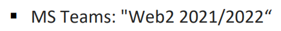

postoji li neki tim na teamsima ili nesto gdje objavljuju obavijesti?
itsdend ne, no prvi labos bi trebali objaviti idući tjedan ako se ne varam
Ima li još netko da mu nije upisan predmet na Edgaru? Tj. ne vidi se na popisu predmeta
Pleteni miš meni ga nije bilo do danas, sad mi se pojavio skupa sa labosom prvim, javi se nekome na mail ako ga i dalje nemas
Pleteni miš probaj login/logout, banalno, ali bio mi je ukljucen edgar od jucer navecer pa mi se nije vidio predmet dok nisam login logout
vidim da oni predlažu node.js, ali da se može u bilo kojem jeziku. Kolko je preporučljivo u pythonu sa djangom?
Postoji tim na teamsima ili ne?  Ovo pise na uvodnom predavanju, ali nema kod-a za pridruzivanje
je li slao tko mail vezano za 2. projekt? Kad će ga stavit i sl.
Jesu li išta pričali o međuispitu i kakvi će izgledati ?
Exelero Nije
MrPeanutButter Bit će na zaokruživanje (s negativnim) i neki za koje će trebat nešto napisat. Većinom bi trebalo biti ono što nije ispitano u projektima.
Kakvi će bit ovi tekstualni, nije reko. Tako da ne znam hoće li bit neko konceptualno znanje ili će trebat pisat kod ili oboje.
Jel se pričalo šta o tome da je isti dan ko i NASP, u razmaku od 1h?
Čekaj jel je rekao hoče li biti uživo ili online ispit?
Jesu rekli ista o ispitu?
foobar na predavanju je mekterovic rekao da ce bit na edgaru, vecina pitanja na zaokruzivanje, par na nadopunjavanje. Bit će negativnih bodova na pitanjima na zaokruživanje, i bit će uglavnom ispitivano gradivo koje nije bilo pokriveno na labosima.
Kaladonter Edgar kao od doma ili Edgar kao dođem na faks pa rješavam ispit na Edgaru?
I još jedno pitanje, kako se najbezbolnije pripremiti za taj ispit? Iz kojih materijala učiti?
IdeGas edgar kao doc na faks pa preko edgara kolko samm shvatio, a što se tiče pripreme za ispit nauči kako rotirat pravokutnike u htmlu i cssu ne znam stvarno.
Postoji li kakva skripta za ovo?
Jel netko možda napravio nekakvu skriptu osnovnih pojmova za sutrašnji mi?
niknik https://www.w3schools.com/
Prof Profesore Horvat, jeste to Vi?